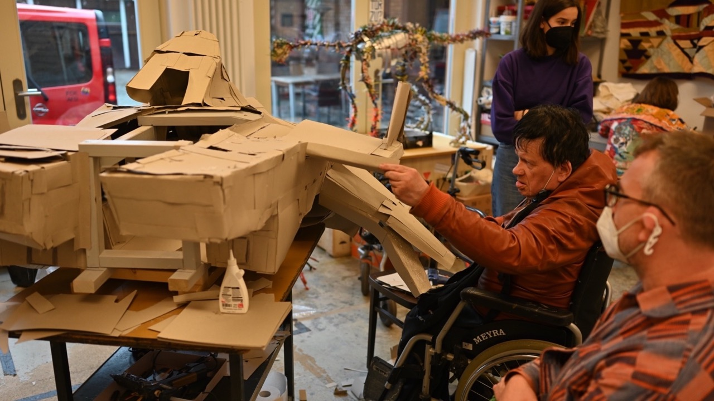
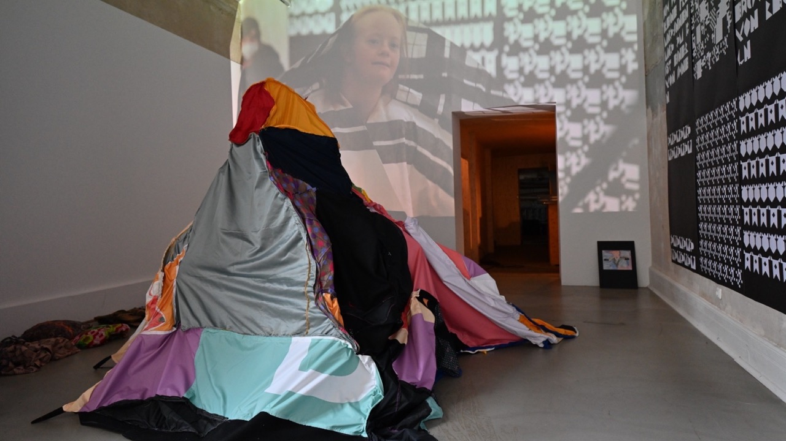
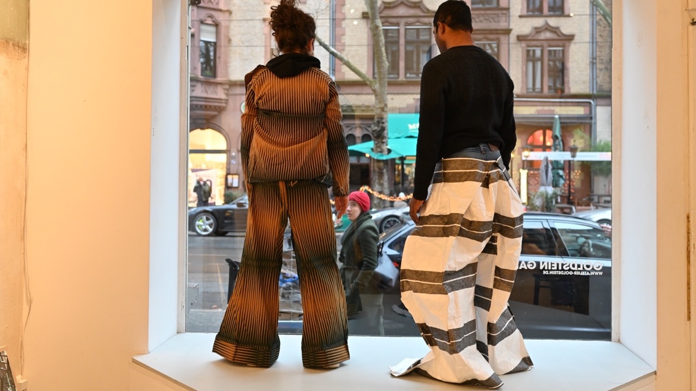
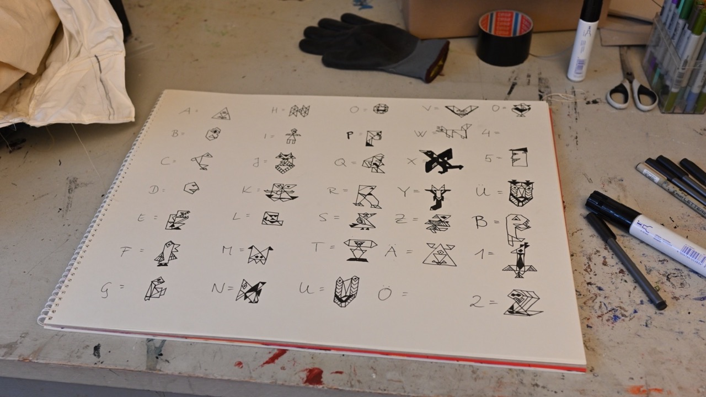
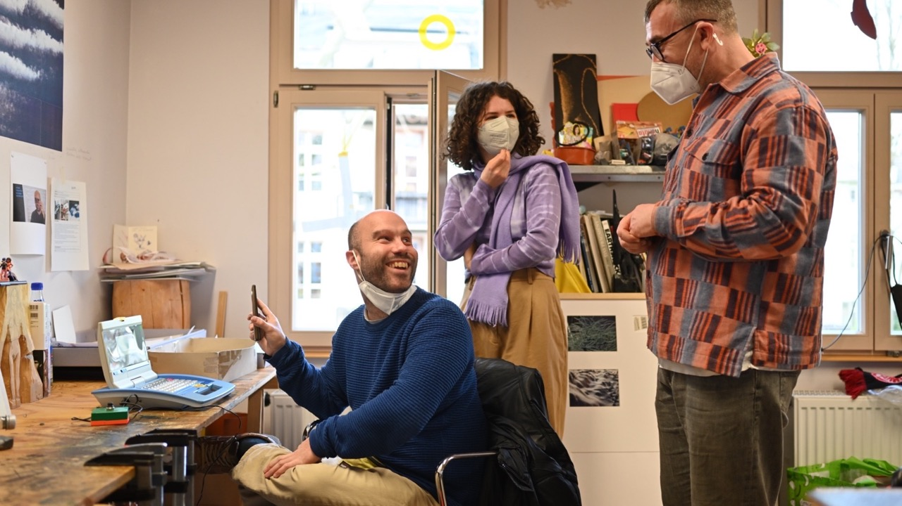

Ausstellung
DIE SÄULE GEHT AN DER LAST VORBEI
Atelier Goldstein, Frankfurt am Main 2022
Die Säule geht an der Last vorbei gehörte zu der Veranstaltungsreihe Über das Fliehen des Atelier Goldstein. Sie widmet sich den bildhaften und gedanklichen Aspekten von Flucht als kreative Strategie und künstlerische Taktik. In Zusammenarbeit mit der Theatergruppe Gintersdorfer/Klaßen und den bildenden Künstler:innen des Atelier Goldstein entstand eine Performance und eine Ausstellung, die anschließend in der Goldstein Galerie gezeigt wurde.
- 
- 
- 
- 
- 
Workshop-Leitung Gintersdorfer/Klaßen
Hauke Heumann, Knut Klaßen, Hanna Zeyer
Künstler:innen
Julius Bockelt, Tina Herchenröther, Julia Krause-Harder, Selbermann, Joel Thottathill